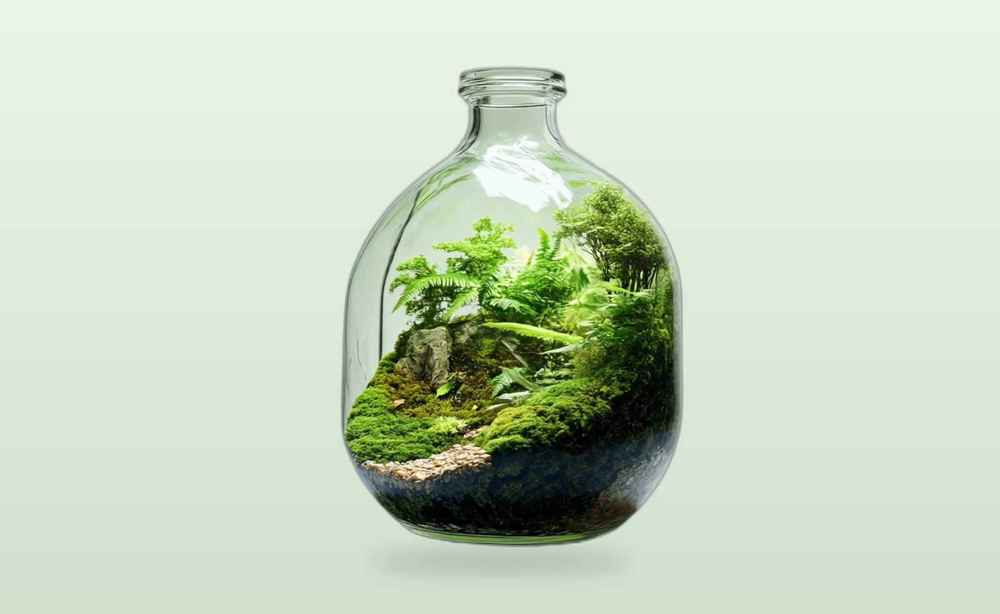
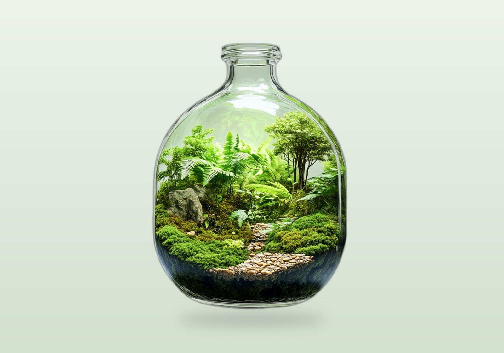
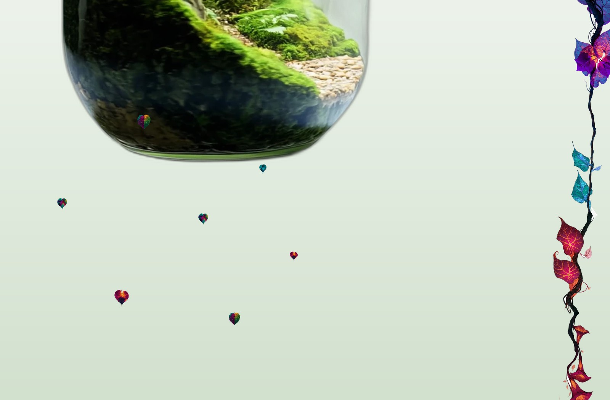
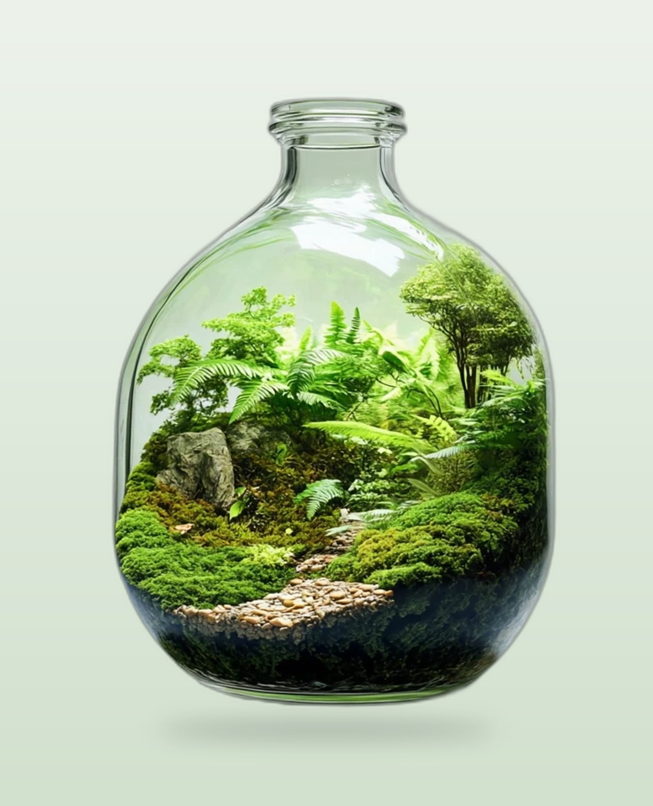

Case /06 · Konzeptstudie · Web-Demo
Ein geschlossenes Biotop im Glas, inszeniert als scroll-choreografiertes Web-Erlebnis. Living Soil, versiegelt.
Die Demo live erleben →Eine Welt, die sich selbst erhält, in einer Scroll-Minute zum Leben erweckt. Versiegelt im Glas.

Ein Rotations-Video der Flasche wird per ffmpeg in 121 Frames zerlegt und mit rembg freigestellt. Die Flasche schwebt auf Transparenz und dreht sich frei durch die Seite.
Sobald die Flasche nach oben abdreht, schiebt sich am rechten Rand eine Liana physisch von oben nach unten ins Bild — kein Einblenden, ein echtes Hineinschieben, im Vordergrund über allem.
Der Scroll setzt Frame, Position und Drehung. Im Zentrum übernimmt die Maus. Dazu fallen echte Blätter der Liana. Alles an eine Scroll-Position gebunden, ohne Framework.


Am Anfang stand ein Video: eine Flasche mit einem Mini-Dschungel darin, die sich langsam dreht. Die Frage war, wie man daraus ein Web-Erlebnis macht, das sich lebendig anfühlt.
Die Flasche wurde Frame für Frame freigestellt. ffmpeg zerlegt das Video, rembg schneidet das Glas sauber aus dem Hintergrund — auch die transparenten Kanten. Übrig bleiben 121 Einzelbilder einer schwebenden Flasche.
Den Rest übernimmt eine eigene Scroll-Engine. Die Flasche steigt von unten auf, dreht sich dabei, kommt mittig zur Ruhe und lässt sich dort mit der Maus drehen. Beim Weiterscrollen dreht sie sich nach oben aus dem Bild.
In diesem Moment schiebt sich am rechten Rand eine Liana von oben herein — nicht eingeblendet, sondern physisch nach unten geschoben, im Vordergrund. Dazu trudeln echte, freigestellte Blätter der Liana langsam durchs Bild.
Biottle ist eine Konzeptstudie. Als Demo zeigt sie in einer Minute, wie aus einem einzelnen Produktvideo eine ganze, atmende Landingpage wird.
Ein Produktvideo, in eine lebendige Welt verwandelt. So kann sich eine Marke anfühlen, bevor der erste Satz Text fällt.